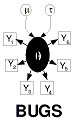

The OpenBUGS library
The BRugs library provides an interface to some features of the OpenBUGS software via a C friendly set of procedures. The signatures of these procedures were chosen to make interfacing to the R/S-Plus statistical packages easy.
The BRugs library has the same interface as the Component Pascal module BugsC:
DEFINITION BugsC (* nonportable (i386) *);
PROCEDURE [ccall] BugsCmd (VAR command: POINTER TO ARRAY [untagged] OF SHORTCHAR;
VAR len: INTEGER);
PROCEDURE [ccall] CLI;
PROCEDURE [ccall] CharArray (VAR procedure: POINTER TO ARRAY [untagged] OF SHORTCHAR;
VAR len: INTEGER; VAR x: POINTER TO ARRAY [untagged] OF SHORTCHAR; VAR lenX, res: INTEGER);
PROCEDURE [ccall] CmdInterpreter (VAR command: POINTER TO ARRAY [untagged] OF SHORTCHAR;
VAR len, res: INTEGER);
PROCEDURE [ccall] Guard (VAR procedure: POINTER TO ARRAY [untagged] OF SHORTCHAR;
VAR len, x, res: INTEGER);
PROCEDURE [ccall] Integer (VAR procedure: POINTER TO ARRAY [untagged] OF SHORTCHAR;
VAR len, x, res: INTEGER);
PROCEDURE [ccall] IntegerArray (VAR procedure: POINTER TO ARRAY [untagged] OF SHORTCHAR;
VAR len: INTEGER; VAR x: ARRAY [untagged] OF INTEGER; VAR lenX, res: INTEGER);
PROCEDURE [ccall] Real (VAR procedure: POINTER TO ARRAY [untagged] OF SHORTCHAR;
VAR len: INTEGER; VAR x, y: REAL; VAR res: INTEGER);
PROCEDURE [ccall] RealArray (VAR procedure: POINTER TO ARRAY [untagged] OF SHORTCHAR;
VAR len: INTEGER; VAR x: ARRAY [untagged] OF REAL; VAR lenX, res: INTEGER);
PROCEDURE [ccall] SetWorking (VAR path: POINTER TO ARRAY [untagged] OF SHORTCHAR;
VAR len: INTEGER);
PROCEDURE [ccall] SetTempDir (VAR path: POINTER TO ARRAY [untagged] OF SHORTCHAR;
VAR len: INTEGER);
PROCEDURE [ccall] UseBufferFile;
PROCEDURE [ccall] UseConsole;
END BugsC.
In the C language this reads
void BugsCmd(char **command, int *len)
void CLI ()
void CharArray (char **procedure, int *len, char **x, int *lenX, int *res)
void CmdInterpreter (char **command, int *len, int *res)
void Guard (char **procedure, int *len, int *x, int *res)
void Integer (char **procedure, int *len, int *x, int *res)
void IntegerArray (char **procedure, int *len, int *x, int *lenX, int *res)
void Real (char **procedure, int *len, double *x, double *y, int *res)
void RealArray (char **procedure, int *len, double *x, int *lenX, int *res)
void SetWorking (char **path, int *len)
void SetTempDir(char **path, int *len)
void UseBufferFile ()
void UseConsole ()
The first two procedures in the library provide an interface to the BUGS scripting language and the command line interpreter version of OpenBUGS. BugsCmd takes one string argument 'command' and executes this command if it is a valid command in the BUGS scripting language. The CLI procedure sets up the command line interface and will terminate when 'modelQuit()' is typed at the command prompt. The first time CLI is called, a welcome message should be displayed on the console.
The UseBufferFile and UseConsole procedures can be used to direct output to a buffer file or to the console. The buffer file is always called buffer.txt, but the directory into which it is created can be changed by the procedure SetTempDir. SetWorkingDir sets the root directory that OpenBUGS will search from to find a file. If SetWorkingDir is not called, OpenBUGS uses the current directory of the invoking process.
Procedures CharArray, CmdInterpreter, Guard, Integer, IntegerArray, Real and RealArray provide an interface to Component Pascal procedures in the OpenBUGS software.They allow named procedures in the OpenBUGS software to be called. The string argument 'procedure' is the name of the Component Pascal procedure to be called. 'procedure' is literally the name of the module containing the procedure, a period, and then the name of the procedure. In the above declarations, 'res' is the exit status.The 'res' argument is set to a non-zero value if it is not possible to call the Component Pascal procedure. This could be because the module or procedure does not exist (res = 1), the procedure was called with the wrong type of argument (res = 2) or the procedure has the wrong signature (res = 3).
CharArray calls a procedure which takes an array of characters as argument. Integer calls a procedure which returns an integer (or boolean). IntegerArray calls a procedure which takes an array of integer as argument. Real calls a procedure which takes an 8 byte real as argument and returns an 8 byte real. RealArray calls a procedure which takes an array of 8 byte reals as argument. In general array arguments to these procedures can either be VAR, IN or OUT parameters and for the case of CharArray a value parameter is also allowed.
The CmdInterpreter is able to interpret a quite general sequence of semi-colon delimited Component Pascal procedures. These procedures can take literal value parameters, which must be given after the procedure name as string literals within parenthesis (string arguments need to be enclosed in single quotes). The Guard procedure calls a Component Pascal procedure that has a single boolean argument of OUT type. If this procedure sets the boolean to true Guard sets its x argument to one otherwise to zero. The Guard procedure can be used to test for some logical condition before calling further Component Pascal procedure. "Guard" procedures can be embeded in the string of procedure passed to CmdInterpreter to short circuit execution of commands if a logical condition fails.
Where a function has a string or array type argument, the next argument in the signature is an integer giving the length of the string or array.
Two examples of using the OpenBUGS library to interface to R/Splus are
"modelCheck" <-
function(fileName)
# Check that OpenBUGS model is syntactically correct
{
path <- dirname(fileName)
path <- if(path == ".") getwd() else path
fileName <- file.path(path, basename(fileName))
if(!file.exists(fileName))
stop("File ", fileName, " does not exist")
if(file.info(fileName)$isdir)
stop(fileName, " is a directory, but a file is required")
command <- paste("BugsEmbed.SetFilePath(", sQuote(fileName),
");BugsEmbed.ParseGuard;BugsEmbed.Parse", sep = "")
if (!is.R()) {
command <- gsub ("\\\\", "/", command)
command <- gsub ("//", "/", command)
}
.C("CmdInterpreter", command, nchar(command), integer(1), PACKAGE = "BRugs")
if(getOption("BRugsVerbose"))
buffer()
}
and
"currentValues" <-
function(nodeLabel)
# Get current value of node
{
nodeLabel <- as.character(nodeLabel)
command <- "BugsRobjects.SetVariable"
len <- nchar(command)
.C("CharArray", command, as.integer(len), nodeLabel, nchar(nodeLabel), integer(1), PACKAGE="BRugs")
command <- "BugsRobjects.GetSize"
nodeSize <- .C("Integer", command, nchar(command), integer(1), integer(1), PACKAGE="BRugs")[[3]]
if(nodeSize == -1)
stop(nodeLabel, " is not a node in BUGS model")
command <- "BugsRobjects.GetValues"
.C("RealArray", command, nchar(command), as.real(rep(NA, nodeSize)),
as.integer(nodeSize), integer(1), NAOK = TRUE, PACKAGE="BRugs")[[3]]
}
Note in the second R function, the allocation of the array variable which will contain the current values of the node is done in R.